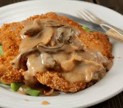

Home
Jagerschnitzel Recipe

Prep Time
20 mins
Cook Time
25 mins
Total Time
45 mins
Servings
4 servings
Ingredients
- Neutral-tasting oil for frying
- 4 boneless pork steaks or chops
- salt and freshly ground black pepper
- 1/2 cup all-purpose flour combined with 1 teaspoon salt
- 2 large eggs, lightly beaten
- 3/4 cup plain breadcrumbs
- Brown Mushroom Gravy
- Chopped fresh parsley, garnish
Instructions
- Pound the pork chops between two sheets of plastic wrap with the flat
side of a meeat tenderizer until 1/4 inch thick. Lightly sprinkle both
sides with salt and freshly ground black pepper.
- Place the flour mixture, egg, and breadcrumbs in 3 separat shallow bowls.
Dredge the pork chops in the flour, the egg, and the breadcrumbs, coating
both sides and all edges at each stage. Be carefull not to press the
breadcrumbs into the meet. Gently shake off the excess crumbs. (Note:
Don't let the schnitzel sit in the coating or they will not be as crispy
once fried - fry immediately.)
- Heat the oil to 330 degrees F (not hotter or the schnitzel will burn
before th emeat is done, not lower or the Schnitzel will absorb the oil
and be greasy). Use just enough oil so that the Schnitzels "swim" in it.
Fry the Schnitzel for about 2-3 minutes on both sides until a deep golden
brown. Transer briefly to a plate lined with paper towels.
- Serve immediately topped with Homemade Brown Mushroom Gravey and garnished
with chopped fresh parsley. Avoid completely drenching the Schitzel with
gravy so that much of the Schnitzel remains crispy.
Serve with
Homemade German Spaetzle, French fries, or Homemade Swabian Potato Salad,
and with a fresh leafy green salad or German Cucumber Salad.